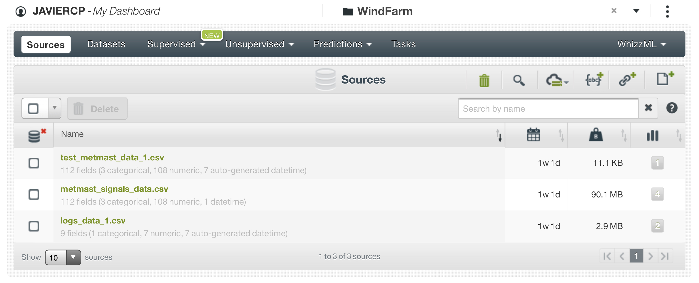
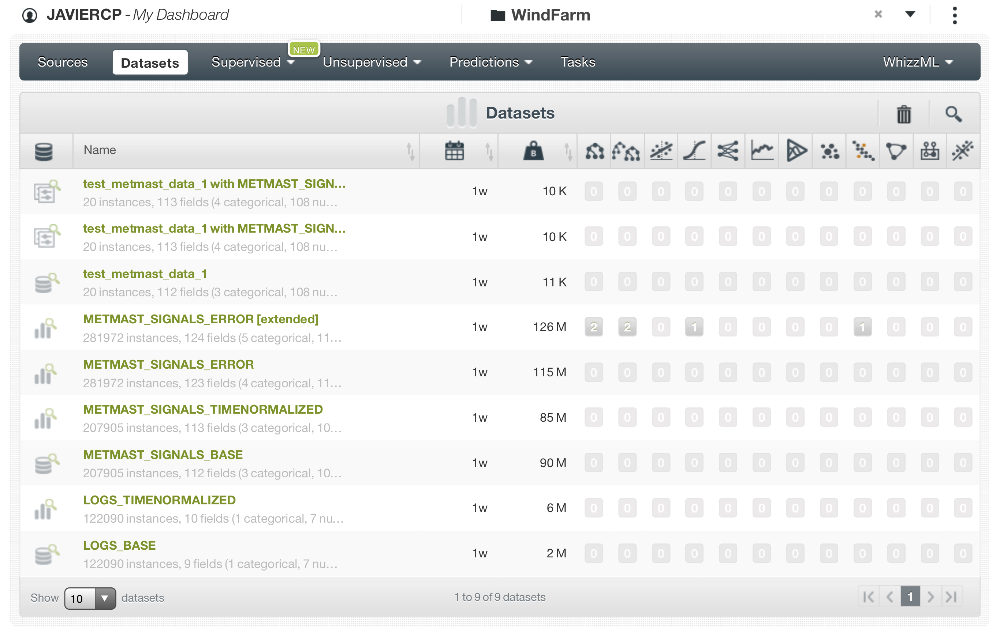
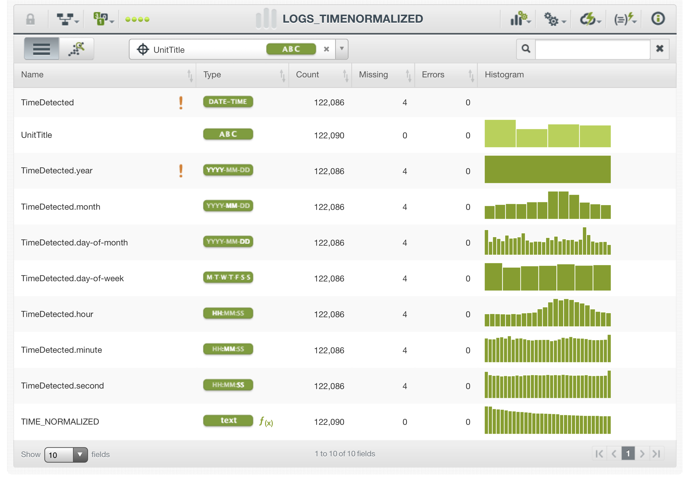
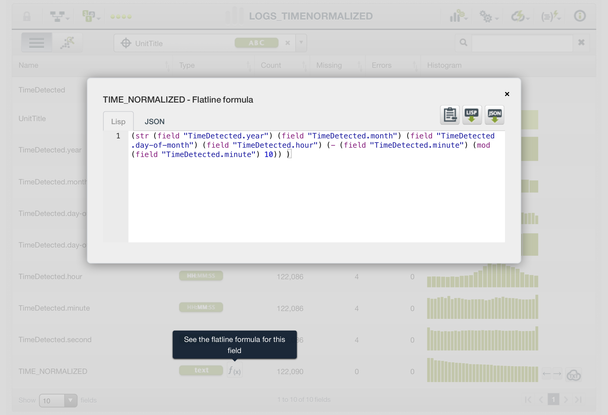
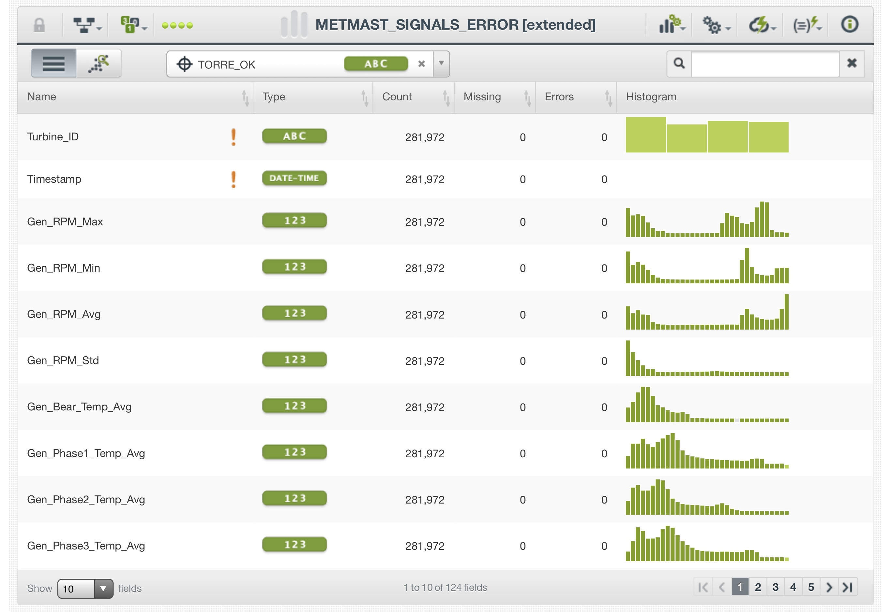
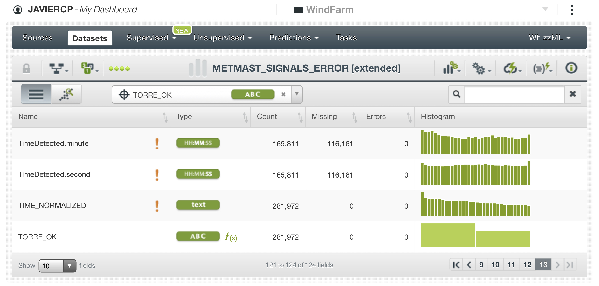
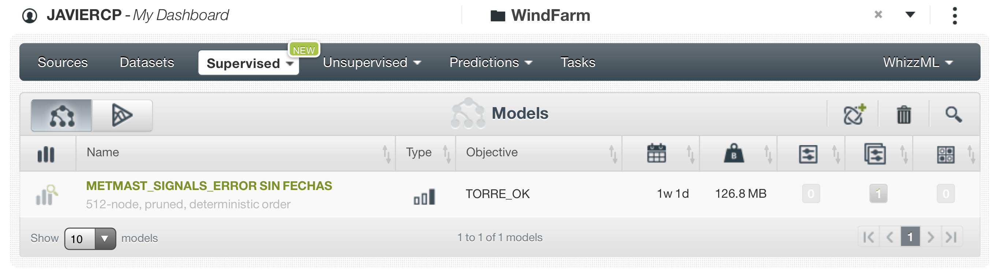
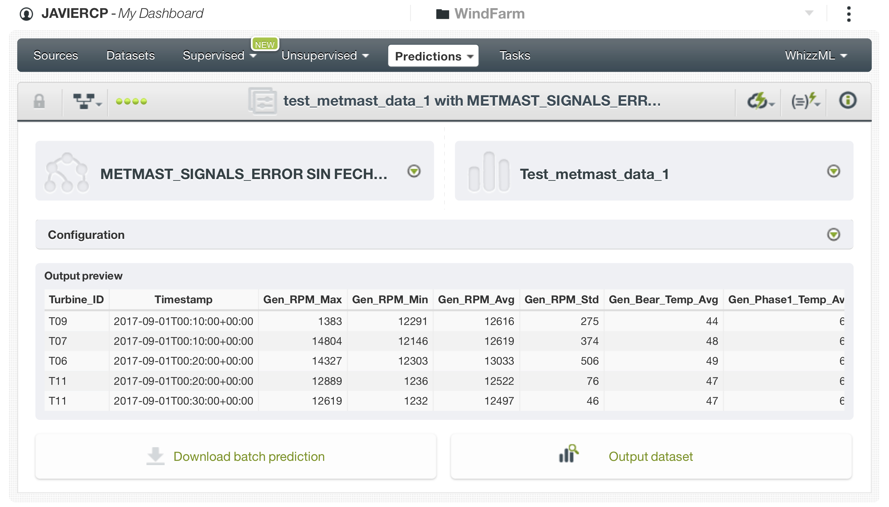

2 Solución reto día del hackathon.
En este apartado está descrito cómo nuestro equipo solucionó este reto durante el Hackathon. Se han añadido comentarios para dar más claridad al desarrollo pero no hemos añadido nada sustancial al análisis, por lo que, por falta de tiempo o error nuestro, no fue incluido en el día de la competición no lo hemos añadido más tarde.
Para ver un análisis hecho con más tiempo y más cercano a lo que nos hubiese gustado hacer puedes pasar directamente al apartado 3 de este notebook.
2.1 Carga de las librerias necesarias.
library(tidyverse)
library(readxl)
library(VIM)
library(GGally)
library(lubridate)
library(stringr)2.2 Preparación datos “train”.
Construimos tres listas con los archivos de training, cada una con un tipo de archivo: ‘logs’, ‘metmast’ y ‘signals’.
logs_files <- list.files(path = "data/Training", pattern = "wind-farm-1-logs*")
metmast_files <- list.files(path = "data/Training", pattern = "wind-farm-1-metmast*")
signals_files <- list.files(path = "data/Training", pattern = "wind-farm-1-signals*")Utilizamos las tres listas creadas para importar todos los datasets de training y unirlos en tres: ‘signals_data’, ‘metmast_data’ y ‘logs_data’.
signals_data <- signals_files %>%
map(function(x) {
read_xlsx(paste0("./data/Training/", x))
}) %>%
reduce(rbind)
metmast_data <- metmast_files %>%
map(function(x) {
read_xlsx(paste0("./data/Training/", x))
}) %>%
reduce(rbind)
logs_data <- logs_files %>%
map(function(x) {
read_xlsx(paste0("./data/Training/", x))
}) %>%
reduce(rbind)Echamos un vistazo a la tabla logs_data obteniendo los principales estadísticos de cada variable.
summary(logs_data)## TimeDetected TimeReset UnitTitle
## Length:122090 Length:122090 Length:122090
## Class :character Class :character Class :character
## Mode :character Mode :character Mode :character
## Remark UnitTitleDestination
## Length:122090 Mode:logical
## Class :character NA's:122090
## Mode :characterhead(logs_data)## # A tibble: 6 x 5
## TimeDetected TimeReset UnitTitle Remark UnitTitleDestina~
## <chr> <chr> <chr> <chr> <lgl>
## 1 2016-04-01T00:01:~ <NA> T01 Yaw Speed Exc: ~ NA
## 2 2016-04-01T00:12:~ <NA> T01 External power ~ NA
## 3 2016-04-01T00:21:~ <NA> T11 External power ~ NA
## 4 2016-04-01T00:22:~ <NA> T06 External power ~ NA
## 5 2016-04-01T00:23:~ <NA> T07 External power ~ NA
## 6 2016-04-01T00:33:~ <NA> T11 Gen. int. vent.~ NAEn principio de esta tabla solo vamos a necesitar la fecha y la identificacion de la turbina
logs_data_1 <- logs_data %>%
select(TimeDetected,
UnitTitle)
logs_data_1$TimeDetected <- ymd_hms(logs_data_1$TimeDetected)
logs_data_1$UnitTitle <- as.factor(logs_data_1$UnitTitle)Solo hay logs en 4 unidades. Hay 4 NAs en las fechas
summary(logs_data_1)## TimeDetected UnitTitle
## Min. :2016-01-01 00:02:18 T01:36891
## 1st Qu.:2016-04-24 07:21:40 T06:24721
## Median :2016-07-23 11:17:18 T07:30939
## Mean :2016-07-09 03:21:27 T11:29539
## 3rd Qu.:2016-09-18 12:21:16
## Max. :2016-12-31 23:57:33
## NA's :4Echamos un vistazo a la tabla metmast_data. Hay varios campos que parecen no tener informacion valida.
summary(metmast_data)## Timestamp Min_Windspeed1 Max_Windspeed1 Avg_Windspeed1
## Length:52697 Min. : 0.00 Min. : 0.000 Min. : 0.00
## Class :character 1st Qu.: 2.30 1st Qu.: 4.600 1st Qu.: 3.50
## Mode :character Median : 3.80 Median : 7.400 Median : 5.60
## Mean : 4.35 Mean : 8.259 Mean : 6.31
## 3rd Qu.: 6.00 3rd Qu.:11.000 3rd Qu.: 8.50
## Max. :16.40 Max. :26.300 Max. :21.70
##
## Var_Windspeed1 Min_Windspeed2 Max_Windspeed2 Avg_Windspeed2
## Min. : 0.0000 Min. : 0.000 Min. : 0.000 Min. : 0.000
## 1st Qu.: 0.1400 1st Qu.: 2.200 1st Qu.: 4.600 1st Qu.: 3.400
## Median : 0.4400 Median : 3.800 Median : 7.400 Median : 5.600
## Mean : 0.7948 Mean : 4.339 Mean : 8.252 Mean : 6.301
## 3rd Qu.: 1.0400 3rd Qu.: 6.000 3rd Qu.:11.000 3rd Qu.: 8.500
## Max. :35.1000 Max. :16.300 Max. :26.700 Max. :21.800
##
## Var_Windspeed2 Min_Winddirection2 Max_Winddirection2
## Min. : 0.0000 Min. : 0 Min. :236
## 1st Qu.: 0.1400 1st Qu.:236 1st Qu.:236
## Median : 0.4400 Median :236 Median :236
## Mean : 0.7984 Mean :236 Mean :236
## 3rd Qu.: 1.0400 3rd Qu.:236 3rd Qu.:236
## Max. :35.9300 Max. :236 Max. :236
##
## Avg_Winddirection2 Var_Winddirection2 Min_AmbientTemp Max_AmbientTemp
## Min. :213 Min. : 0.000 Min. :-40.00 Min. : 6.00
## 1st Qu.:236 1st Qu.: 0.000 1st Qu.: 14.00 1st Qu.:15.00
## Median :236 Median : 0.000 Median : 17.00 Median :18.00
## Mean :236 Mean : 0.137 Mean : 18.32 Mean :19.16
## 3rd Qu.:236 3rd Qu.: 0.000 3rd Qu.: 22.00 3rd Qu.:23.00
## Max. :236 Max. :4683.000 Max. : 39.00 Max. :40.00
##
## Avg_AmbientTemp Min_Pressure Max_Pressure Avg_Pressure
## Min. : 5.00 Min. : 991 Min. : 992 Min. : 992
## 1st Qu.:15.00 1st Qu.:1007 1st Qu.:1007 1st Qu.:1007
## Median :18.00 Median :1009 Median :1009 Median :1009
## Mean :18.71 Mean :1010 Mean :1010 Mean :1010
## 3rd Qu.:23.00 3rd Qu.:1013 3rd Qu.:1013 3rd Qu.:1013
## Max. :40.00 Max. :1028 Max. :1028 Max. :1028
##
## Min_Humidity Max_Humidity Avg_Humidity Min_Precipitation
## Min. : 13.00 Min. : 14.00 Min. : 13.0 Min. : 0.00000
## 1st Qu.: 57.00 1st Qu.: 60.00 1st Qu.: 58.0 1st Qu.: 0.00000
## Median : 70.00 Median : 72.00 Median : 71.0 Median : 0.00000
## Mean : 68.21 Mean : 70.68 Mean : 69.4 Mean : 0.04547
## 3rd Qu.: 80.00 3rd Qu.: 83.00 3rd Qu.: 81.0 3rd Qu.: 0.00000
## Max. :100.00 Max. :100.00 Max. :100.0 Max. :55.00000
## NA's :1 NA's :1
## Max_Precipitation Avg_Precipitation Min_Raindetection Max_Raindetection
## Min. : 0.0000 Min. : 0.0000 Min. :0 Min. :0.0e+00
## 1st Qu.: 0.0000 1st Qu.: 0.0000 1st Qu.:0 1st Qu.:0.0e+00
## Median : 0.0000 Median : 0.0000 Median :0 Median :0.0e+00
## Mean : 0.1291 Mean : 0.0864 Mean :0 Mean :1.9e-05
## 3rd Qu.: 0.0000 3rd Qu.: 0.0000 3rd Qu.:0 3rd Qu.:0.0e+00
## Max. :79.0000 Max. :74.0000 Max. :0 Max. :1.0e+00
##
## Avg_Raindetection Anemometer1_Freq Anemometer1_Offset
## Min. :0 Min. :0.0499 Min. :0.24
## 1st Qu.:0 1st Qu.:0.0499 1st Qu.:0.24
## Median :0 Median :0.0499 Median :0.24
## Mean :0 Mean :0.0499 Mean :0.24
## 3rd Qu.:0 3rd Qu.:0.0499 3rd Qu.:0.24
## Max. :0 Max. :0.0499 Max. :0.24
##
## Anemometer1_CorrGain Anemometer1_CorrOffset Anemometer2_Freq
## Min. :1 Min. :0 Min. :0.0499
## 1st Qu.:1 1st Qu.:0 1st Qu.:0.0499
## Median :1 Median :0 Median :0.0499
## Mean :1 Mean :0 Mean :0.0499
## 3rd Qu.:1 3rd Qu.:0 3rd Qu.:0.0499
## Max. :1 Max. :0 Max. :0.0499
##
## Anemometer2_Offset Anemometer2_CorrGain Anemometer2_CorrOffset
## Min. :0.24 Min. :1 Min. :0
## 1st Qu.:0.24 1st Qu.:1 1st Qu.:0
## Median :0.24 Median :1 Median :0
## Mean :0.24 Mean :1 Mean :0
## 3rd Qu.:0.24 3rd Qu.:1 3rd Qu.:0
## Max. :0.24 Max. :1 Max. :0
##
## DistanceAirPress AirRessureSensorZeroOffset Anemometer1_Avg_Freq
## Min. :0 Min. :600 Min. : 0
## 1st Qu.:0 1st Qu.:600 1st Qu.: 66
## Median :0 Median :600 Median :108
## Mean :0 Mean :600 Mean :123
## 3rd Qu.:0 3rd Qu.:600 3rd Qu.:166
## Max. :0 Max. :600 Max. :431
##
## Anemometer2_Avg_Freq Pressure_Avg_Freq
## Min. : 0.0 Min. :392.0
## 1st Qu.: 65.0 1st Qu.:407.0
## Median :108.0 Median :409.0
## Mean :122.9 Mean :410.1
## 3rd Qu.:166.0 3rd Qu.:413.0
## Max. :434.0 Max. :428.0
## Nos quedamos solo con los campos que parecen tener informacion valida
metmast_data_1 <- metmast_data %>%
select(-Anemometer1_CorrOffset,
-Anemometer2_Freq,
-Anemometer2_Offset,
-Anemometer2_CorrGain,
-Anemometer2_CorrOffset,
-DistanceAirPress,
-AirRessureSensorZeroOffset,
-Min_Precipitation,
-Max_Precipitation,
-Avg_Precipitation,
-Min_Raindetection,
-Avg_Raindetection,
-Max_Raindetection,
-Min_Winddirection2,
-Max_Winddirection2,
-Avg_Winddirection2,
-Var_Winddirection2,
-Anemometer1_CorrGain,
)
metmast_data_1$Timestamp <- ymd_hms(metmast_data_1$Timestamp)summary(metmast_data_1)## Timestamp Min_Windspeed1 Max_Windspeed1
## Min. :2016-01-01 00:00:00 Min. : 0.00 Min. : 0.000
## 1st Qu.:2016-04-01 12:40:00 1st Qu.: 2.30 1st Qu.: 4.600
## Median :2016-07-02 00:20:00 Median : 3.80 Median : 7.400
## Mean :2016-07-02 00:07:10 Mean : 4.35 Mean : 8.259
## 3rd Qu.:2016-10-01 12:00:00 3rd Qu.: 6.00 3rd Qu.:11.000
## Max. :2016-12-31 23:50:00 Max. :16.40 Max. :26.300
##
## Avg_Windspeed1 Var_Windspeed1 Min_Windspeed2 Max_Windspeed2
## Min. : 0.00 Min. : 0.0000 Min. : 0.000 Min. : 0.000
## 1st Qu.: 3.50 1st Qu.: 0.1400 1st Qu.: 2.200 1st Qu.: 4.600
## Median : 5.60 Median : 0.4400 Median : 3.800 Median : 7.400
## Mean : 6.31 Mean : 0.7948 Mean : 4.339 Mean : 8.252
## 3rd Qu.: 8.50 3rd Qu.: 1.0400 3rd Qu.: 6.000 3rd Qu.:11.000
## Max. :21.70 Max. :35.1000 Max. :16.300 Max. :26.700
##
## Avg_Windspeed2 Var_Windspeed2 Min_AmbientTemp Max_AmbientTemp
## Min. : 0.000 Min. : 0.0000 Min. :-40.00 Min. : 6.00
## 1st Qu.: 3.400 1st Qu.: 0.1400 1st Qu.: 14.00 1st Qu.:15.00
## Median : 5.600 Median : 0.4400 Median : 17.00 Median :18.00
## Mean : 6.301 Mean : 0.7984 Mean : 18.32 Mean :19.16
## 3rd Qu.: 8.500 3rd Qu.: 1.0400 3rd Qu.: 22.00 3rd Qu.:23.00
## Max. :21.800 Max. :35.9300 Max. : 39.00 Max. :40.00
##
## Avg_AmbientTemp Min_Pressure Max_Pressure Avg_Pressure
## Min. : 5.00 Min. : 991 Min. : 992 Min. : 992
## 1st Qu.:15.00 1st Qu.:1007 1st Qu.:1007 1st Qu.:1007
## Median :18.00 Median :1009 Median :1009 Median :1009
## Mean :18.71 Mean :1010 Mean :1010 Mean :1010
## 3rd Qu.:23.00 3rd Qu.:1013 3rd Qu.:1013 3rd Qu.:1013
## Max. :40.00 Max. :1028 Max. :1028 Max. :1028
##
## Min_Humidity Max_Humidity Avg_Humidity Anemometer1_Freq
## Min. : 13.00 Min. : 14.00 Min. : 13.0 Min. :0.0499
## 1st Qu.: 57.00 1st Qu.: 60.00 1st Qu.: 58.0 1st Qu.:0.0499
## Median : 70.00 Median : 72.00 Median : 71.0 Median :0.0499
## Mean : 68.21 Mean : 70.68 Mean : 69.4 Mean :0.0499
## 3rd Qu.: 80.00 3rd Qu.: 83.00 3rd Qu.: 81.0 3rd Qu.:0.0499
## Max. :100.00 Max. :100.00 Max. :100.0 Max. :0.0499
## NA's :1 NA's :1
## Anemometer1_Offset Anemometer1_Avg_Freq Anemometer2_Avg_Freq
## Min. :0.24 Min. : 0 Min. : 0.0
## 1st Qu.:0.24 1st Qu.: 66 1st Qu.: 65.0
## Median :0.24 Median :108 Median :108.0
## Mean :0.24 Mean :123 Mean :122.9
## 3rd Qu.:0.24 3rd Qu.:166 3rd Qu.:166.0
## Max. :0.24 Max. :431 Max. :434.0
##
## Pressure_Avg_Freq
## Min. :392.0
## 1st Qu.:407.0
## Median :409.0
## Mean :410.1
## 3rd Qu.:413.0
## Max. :428.0
## Echamos un vistazo a la tabla signals_data. Hay varios campos que parecen no tener informacion valida.
summary(signals_data)## Turbine_ID Timestamp Gen_RPM_Max Gen_RPM_Min
## Length:207905 Length:207905 Min. : 0.0 Min. : 0.0
## Class :character Class :character 1st Qu.: 296.8 1st Qu.: 183.2
## Mode :character Mode :character Median :1405.2 Median :1231.1
## Mean :1166.5 Mean : 915.3
## 3rd Qu.:1676.6 3rd Qu.:1342.2
## Max. :2040.9 Max. :1666.1
## Gen_RPM_Avg Gen_RPM_Std Gen_Bear_Temp_Avg Gen_Phase1_Temp_Avg
## Min. : 0.0 Min. : 0.00 Min. : 18.00 Min. : 21.00
## 1st Qu.: 255.4 1st Qu.: 13.70 1st Qu.: 34.00 1st Qu.: 41.00
## Median :1271.9 Median : 28.10 Median : 43.00 Median : 59.00
## Mean :1043.7 Mean : 67.17 Mean : 45.39 Mean : 62.71
## 3rd Qu.:1571.0 3rd Qu.: 69.80 3rd Qu.: 54.00 3rd Qu.: 74.00
## Max. :1683.7 Max. :823.10 Max. :205.00 Max. :205.00
## Gen_Phase2_Temp_Avg Gen_Phase3_Temp_Avg Hyd_Oil_Temp_Avg
## Min. : 21.00 Min. : 21.00 Min. :22.00
## 1st Qu.: 41.00 1st Qu.: 41.00 1st Qu.:29.00
## Median : 60.00 Median : 59.00 Median :33.00
## Mean : 62.95 Mean : 62.07 Mean :35.19
## 3rd Qu.: 75.00 3rd Qu.: 74.00 3rd Qu.:41.00
## Max. :205.00 Max. :205.00 Max. :55.00
## Gear_Oil_Temp_Avg Gear_Bear_Temp_Avg Nac_Temp_Avg Rtr_RPM_Max
## Min. :25.00 Min. :23.00 Min. :17.00 Min. : 0.00
## 1st Qu.:43.00 1st Qu.:44.00 1st Qu.:25.00 1st Qu.: 2.60
## Median :48.00 Median :53.00 Median :29.00 Median :12.40
## Mean :47.58 Mean :51.37 Mean :29.43 Mean :10.25
## 3rd Qu.:53.00 3rd Qu.:60.00 3rd Qu.:33.00 3rd Qu.:14.80
## Max. :61.00 Max. :71.00 Max. :50.00 Max. :16.80
## Rtr_RPM_Min Rtr_RPM_Avg Amb_WindSpeed_Max Amb_WindSpeed_Min
## Min. : 0.000 Min. : 0.000 Min. : 0.40 Min. : 0.400
## 1st Qu.: 1.700 1st Qu.: 2.300 1st Qu.: 6.80 1st Qu.: 0.700
## Median :10.900 Median :11.300 Median :10.80 Median : 1.500
## Mean : 8.014 Mean : 9.166 Mean :12.61 Mean : 1.627
## 3rd Qu.:11.900 3rd Qu.:13.900 3rd Qu.:17.60 3rd Qu.: 2.200
## Max. :14.800 Max. :14.900 Max. :70.00 Max. :14.600
## Amb_WindSpeed_Avg Amb_WindSpeed_Std Amb_WindDir_Relative_Avg
## Min. : 0.400 Min. : 0.000 Min. :-180.0000
## 1st Qu.: 3.100 1st Qu.: 0.600 1st Qu.: -10.5000
## Median : 5.200 Median : 1.000 Median : 0.2000
## Mean : 5.941 Mean : 1.166 Mean : 0.3694
## 3rd Qu.: 8.100 3rd Qu.: 1.500 3rd Qu.: 10.0000
## Max. :22.500 Max. :55.100 Max. : 180.0000
## Amb_WindDir_Abs_Avg Amb_Temp_Avg Prod_LatestAvg_ActPwrGen0
## Min. : 0.0 Min. : 6.00 Min. :-5027.0
## 1st Qu.:100.8 1st Qu.:15.00 1st Qu.: -731.0
## Median :163.5 Median :19.00 Median : 0.0
## Mean :183.2 Mean :19.62 Mean : -397.2
## 3rd Qu.:272.5 3rd Qu.:24.00 3rd Qu.: 0.0
## Max. :359.0 Max. :41.00 Max. : 796.0
## Prod_LatestAvg_ActPwrGen1 Prod_LatestAvg_ActPwrGen2
## Min. : -736 Min. :0
## 1st Qu.: 0 1st Qu.:0
## Median : 34073 Median :0
## Mean : 86771 Mean :0
## 3rd Qu.:141527 3rd Qu.:0
## Max. :334398 Max. :0
## Prod_LatestAvg_TotActPwr Prod_LatestAvg_ReactPwrGen0
## Min. : -5027 Min. :-5046.0
## 1st Qu.: -675 1st Qu.: -246.0
## Median : 34052 Median : 0.0
## Mean : 86374 Mean : -289.7
## 3rd Qu.:141526 3rd Qu.: 0.0
## Max. :334398 Max. : 500.0
## Prod_LatestAvg_ReactPwrGen1 Prod_LatestAvg_ReactPwrGen2
## Min. :-77957 Min. :0
## 1st Qu.:-26894 1st Qu.:0
## Median :-15572 Median :0
## Mean :-15112 Mean :0
## 3rd Qu.: 0 3rd Qu.:0
## Max. :166806 Max. :0
## Prod_LatestAvg_TotReactPwr HVTrafo_Phase1_Temp_Avg
## Min. :-77957 Min. : 28.00
## 1st Qu.:-26896 1st Qu.: 50.00
## Median :-15582 Median : 62.00
## Mean :-15402 Mean : 61.65
## 3rd Qu.: -1229 3rd Qu.: 71.00
## Max. :166806 Max. :104.00
## HVTrafo_Phase2_Temp_Avg HVTrafo_Phase3_Temp_Avg
## Min. : 28.00 Min. : 27.00
## 1st Qu.: 54.00 1st Qu.: 50.00
## Median : 69.00 Median : 67.00
## Mean : 68.65 Mean : 67.27
## 3rd Qu.: 79.00 3rd Qu.: 80.00
## Max. :119.00 Max. :137.00
## Grd_InverterPhase1_Temp_Avg Cont_Top_Temp_Avg Cont_Hub_Temp_Avg
## Min. :29.00 Min. :23.00 Min. :14.0
## 1st Qu.:35.00 1st Qu.:35.00 1st Qu.:25.0
## Median :39.00 Median :39.00 Median :29.0
## Mean :38.11 Mean :39.52 Mean :29.4
## 3rd Qu.:40.00 3rd Qu.:43.00 3rd Qu.:33.0
## Max. :58.00 Max. :58.00 Max. :49.0
## Cont_VCP_Temp_Avg Gen_SlipRing_Temp_Avg Spin_Temp_Avg
## Min. :26.00 Min. : 12.00 Min. : 8.00
## 1st Qu.:36.00 1st Qu.: 23.00 1st Qu.:18.00
## Median :41.00 Median : 28.00 Median :22.00
## Mean :40.05 Mean : 29.52 Mean :22.47
## 3rd Qu.:44.00 3rd Qu.: 35.00 3rd Qu.:26.00
## Max. :66.00 Max. :205.00 Max. :44.00
## Blds_PitchAngle_Min Blds_PitchAngle_Max Blds_PitchAngle_Avg
## Min. :-4.200 Min. :-2.20 Min. :-2.300
## 1st Qu.:-2.400 1st Qu.: 0.20 1st Qu.:-1.700
## Median :-2.200 Median : 4.50 Median :-0.100
## Mean : 6.391 Mean :13.62 Mean : 9.009
## 3rd Qu.:20.800 3rd Qu.:24.00 3rd Qu.:24.000
## Max. :90.000 Max. :90.00 Max. :90.000
## Blds_PitchAngle_Std Cont_VCP_ChokcoilTemp_Avg Grd_RtrInvPhase1_Temp_Avg
## Min. : 0.000 Min. : 20.00 Min. :29.0
## 1st Qu.: 0.100 1st Qu.: 53.00 1st Qu.:35.0
## Median : 0.400 Median : 90.00 Median :39.0
## Mean : 1.697 Mean : 79.67 Mean :38.4
## 3rd Qu.: 1.000 3rd Qu.:101.00 3rd Qu.:41.0
## Max. :45.000 Max. :149.00 Max. :59.0
## Grd_RtrInvPhase2_Temp_Avg Grd_RtrInvPhase3_Temp_Avg Cont_VCP_WtrTemp_Avg
## Min. :29.00 Min. :29.00 Min. :22.00
## 1st Qu.:35.00 1st Qu.:35.00 1st Qu.:33.00
## Median :39.00 Median :38.00 Median :38.00
## Mean :38.53 Mean :38.46 Mean :36.71
## 3rd Qu.:41.00 3rd Qu.:41.00 3rd Qu.:39.00
## Max. :60.00 Max. :59.00 Max. :54.00
## Grd_Prod_Pwr_Avg Grd_Prod_CosPhi_Avg Grd_Prod_Freq_Avg
## Min. : -30.1 Min. :0.2000 Min. : 0.0
## 1st Qu.: -4.1 1st Qu.:0.8000 1st Qu.:50.0
## Median : 204.3 Median :0.9000 Median :50.0
## Mean : 518.2 Mean :0.8718 Mean :50.0
## 3rd Qu.: 849.1 3rd Qu.:1.0000 3rd Qu.:50.0
## Max. :2000.5 Max. :1.0000 Max. :50.1
## Grd_Prod_VoltPhse1_Avg Grd_Prod_VoltPhse2_Avg Grd_Prod_VoltPhse3_Avg
## Min. : 0.0 Min. : 0.0 Min. : 0.0
## 1st Qu.:398.2 1st Qu.:396.4 1st Qu.:395.7
## Median :399.3 Median :397.7 Median :397.2
## Mean :399.3 Mean :397.7 Mean :397.3
## 3rd Qu.:400.4 3rd Qu.:398.9 3rd Qu.:398.8
## Max. :419.7 Max. :418.1 Max. :419.7
## Grd_Prod_CurPhse1_Avg Grd_Prod_CurPhse2_Avg Grd_Prod_CurPhse3_Avg
## Min. : 1.0 Min. : 1.0 Min. : 1.0
## 1st Qu.: 12.6 1st Qu.: 12.0 1st Qu.: 13.7
## Median : 195.8 Median : 219.7 Median : 201.0
## Mean : 447.8 Mean : 463.5 Mean : 448.3
## 3rd Qu.: 712.2 3rd Qu.: 739.2 3rd Qu.: 714.2
## Max. :1699.8 Max. :1712.8 Max. :1688.4
## Grd_Prod_Pwr_Max Grd_Prod_Pwr_Min Grd_Busbar_Temp_Avg Rtr_RPM_Std
## Min. : -27.7 Min. : -90.4 Min. :20.00 Min. :0.0000
## 1st Qu.: -2.5 1st Qu.: -24.8 1st Qu.:33.00 1st Qu.:0.1000
## Median : 402.7 Median : 50.5 Median :38.00 Median :0.3000
## Mean : 736.4 Mean : 294.7 Mean :37.43 Mean :0.6057
## 3rd Qu.:1390.4 3rd Qu.: 392.2 3rd Qu.:42.00 3rd Qu.:0.7000
## Max. :2120.6 Max. :1996.1 Max. :77.00 Max. :7.4000
## Amb_WindSpeed_Est_Avg Grd_Prod_Pwr_Std Grd_Prod_ReactPwr_Avg
## Min. : 0.000 Min. : 0.00 Min. :-467.90
## 1st Qu.: 3.100 1st Qu.: 3.50 1st Qu.:-161.40
## Median : 5.300 Median : 56.50 Median : -93.50
## Mean : 5.932 Mean : 94.46 Mean : -92.41
## 3rd Qu.: 8.100 3rd Qu.: 149.00 3rd Qu.: -7.40
## Max. :22.100 Max. :1009.60 Max. :1000.00
## Grd_Prod_ReactPwr_Max Grd_Prod_ReactPwr_Min Grd_Prod_ReactPwr_Std
## Min. :-449.5 Min. :-1001.3 Min. : 0.00
## 1st Qu.:-147.2 1st Qu.: -202.0 1st Qu.: 2.50
## Median : -74.6 Median : -129.1 Median : 4.10
## Mean : -27.0 Mean : -145.9 Mean : 21.41
## 3rd Qu.: -0.4 3rd Qu.: -26.6 3rd Qu.: 7.90
## Max. :1003.3 Max. : 997.6 Max. :575.70
## Grd_Prod_PsblePwr_Avg Grd_Prod_PsblePwr_Max Grd_Prod_PsblePwr_Min
## Min. : 0.0 Min. : 0.0 Min. : 0.0
## 1st Qu.: 19.6 1st Qu.: 75.7 1st Qu.: 0.0
## Median : 230.9 Median : 457.0 Median : 65.3
## Mean : 552.5 Mean : 771.1 Mean : 318.3
## 3rd Qu.: 921.5 3rd Qu.:1520.6 3rd Qu.: 417.6
## Max. :2000.0 Max. :2000.0 Max. :2000.0
## Grd_Prod_PsblePwr_Std Grd_Prod_PsbleInd_Avg Grd_Prod_PsbleInd_Max
## Min. : 0.0 Min. :-1000.0 Min. :-1000.0
## 1st Qu.: 12.7 1st Qu.: -985.8 1st Qu.: -583.3
## Median : 59.1 Median : -627.0 Median : -239.9
## Mean : 96.9 Mean : -534.6 Mean : -368.7
## 3rd Qu.:153.2 3rd Qu.: 0.0 3rd Qu.: 0.0
## Max. :999.5 Max. : 0.0 Max. : 200.0
## Grd_Prod_PsbleInd_Min Grd_Prod_PsbleInd_Std Grd_Prod_PsbleCap_Avg
## Min. :-1000.0 Min. : 0.00 Min. : 0.0
## 1st Qu.:-1000.0 1st Qu.: 0.00 1st Qu.: 0.0
## Median :-1000.0 Median : 16.20 Median : 508.7
## Mean : -669.4 Mean : 74.53 Mean : 504.6
## 3rd Qu.: 0.0 3rd Qu.:140.40 3rd Qu.: 965.1
## Max. : 0.0 Max. :498.90 Max. :1000.0
## Grd_Prod_PsbleCap_Max Grd_Prod_PsbleCap_Min Grd_Prod_PsbleCap_Std
## Min. : 0.0 Min. :-200.0 Min. : 0.00
## 1st Qu.: 0.0 1st Qu.: 0.0 1st Qu.: 0.00
## Median :1000.0 Median : 239.9 Median : 29.60
## Mean : 657.8 Mean : 322.7 Mean : 81.33
## 3rd Qu.:1000.0 3rd Qu.: 517.5 3rd Qu.:152.50
## Max. :1000.0 Max. :1000.0 Max. :498.90
## Gen_Bear2_Temp_Avg Nac_Direction_Avg
## Min. : 20.00 Min. : 0.0
## 1st Qu.: 32.00 1st Qu.:102.8
## Median : 40.00 Median :184.8
## Mean : 42.37 Mean :189.9
## 3rd Qu.: 51.00 3rd Qu.:278.8
## Max. :205.00 Max. :359.0signals_data$Timestamp <- ymd_hms(signals_data$Timestamp)
signals_data$Turbine_ID <- as.factor(signals_data$Turbine_ID)summary(signals_data$Timestamp) ## Min. 1st Qu. Median
## "2016-01-01 00:00:00" "2016-03-31 07:20:00" "2016-06-29 17:30:00"
## Mean 3rd Qu. Max.
## "2016-07-01 11:35:06" "2016-10-01 23:50:00" "2016-12-31 23:50:00"summary(signals_data$Turbine_ID) ## T01 T06 T07 T11
## 52439 50575 52445 52446Ahora tenemos que juntar las tres tablas. Las tablas metmast y signals no hay problema para el cruce. Lo hacemos por TimeStamp
metmast_signals_data <- signals_data %>%
left_join(metmast_data_1, by = 'Timestamp')Exportamos los datasets a csv para su procesado en BIGml
write_csv(metmast_signals_data, "final_csvs/Training/metmast_signals_data.csv")
write_csv(logs_data_1, "final_csvs/Training/logs_data_1.csv")2.3 Archivos de test
test_metmast <- read_xlsx(path = "./Data/Test/wind-farm-1-metmast-testing.xlsx")
test_metmast_data_1 <- test_metmast %>%
select(-Anemometer1_CorrOffset,
-Anemometer2_Freq,
-Anemometer2_Offset,
-Anemometer2_CorrGain,
-Anemometer2_CorrOffset,
-DistanceAirPress,
-AirRessureSensorZeroOffset,
-Min_Precipitation,
-Max_Precipitation,
-Avg_Precipitation,
-Min_Raindetection,
-Avg_Raindetection,
-Max_Raindetection,
-Min_Winddirection2,
-Max_Winddirection2,
-Avg_Winddirection2,
-Var_Winddirection2,
-Anemometer1_CorrGain,
)
test_signals <- read_xlsx(path = "./Data/Test/wind-farm-1-signals-testing.xlsx")
test_metmast_signals_data <- test_signals %>%
left_join(test_metmast_data_1, by = 'Timestamp')write_csv(test_metmast_signals_data, "./final_csvs/Test/test_metmast_data_1.csv")2.4 Modelización en BigML
Aquí se ven las fuente de datos creadas para este reto. “logs_data_1.csv” es la fuente a partir de los errores de las torres. “metmast_signals_data.csv” es la fuente a partir de los datos de las condiciones meteorológicas y los datos de los sensores SCADA (procesadas en R para hacer el join). Y “test_metmast_data_1.csv” es la fuente con los datos de test para hacer las predicciones.

Aquí se ven los datasets que creamos a partir de las dos fuentes. Como en el reto anterior se puede ver que creamos un dataset y sobre él fuimos iterando. Lo primero que hicimos fue normalizar la fecha de los errores que se podian producir en cualquier minuto mientras que las mediciones se realizaban cada 10 minutos. Luego hicimos un join de los datasets por el identificador de la torre y la fecha normalizada con lo que ya teniamos un dataset a partir del que entrenar el modelo. 
Detalle del dataset de errores con el campo fecha normalizada. 
Detalle de la función Lisp que utilizamos para normalizar los minutos de los logs. 
Detalle del dataset final que utilizamos para entrenar el modelo con los campos que eliminamos para que no influyesen en la predicción. 
Detalle del dataset final que utilizamos para entrenar el modelo con los campos que eliminamos para que no influyesen en la predicción. 
Por tiempo solo nos dio tiempo a entrenar correctamente un arbol con el dataset. 
Predicción batch para el modelo creada con el dataset de prueba. Detalle de la predicción. 